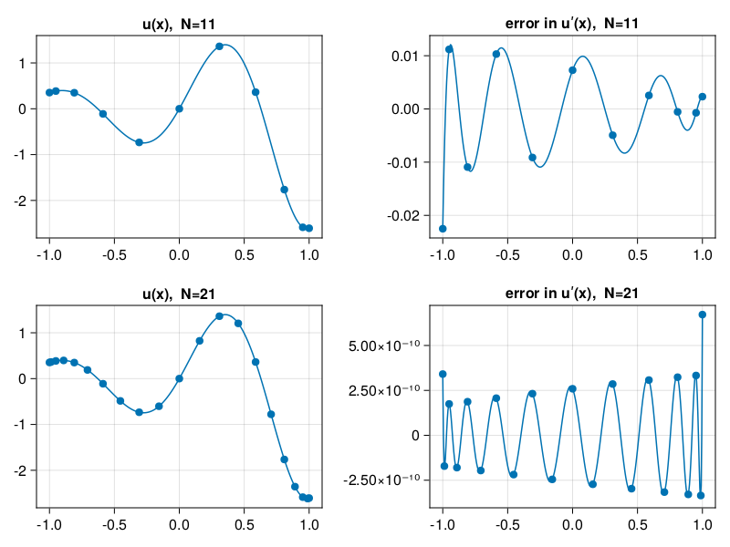
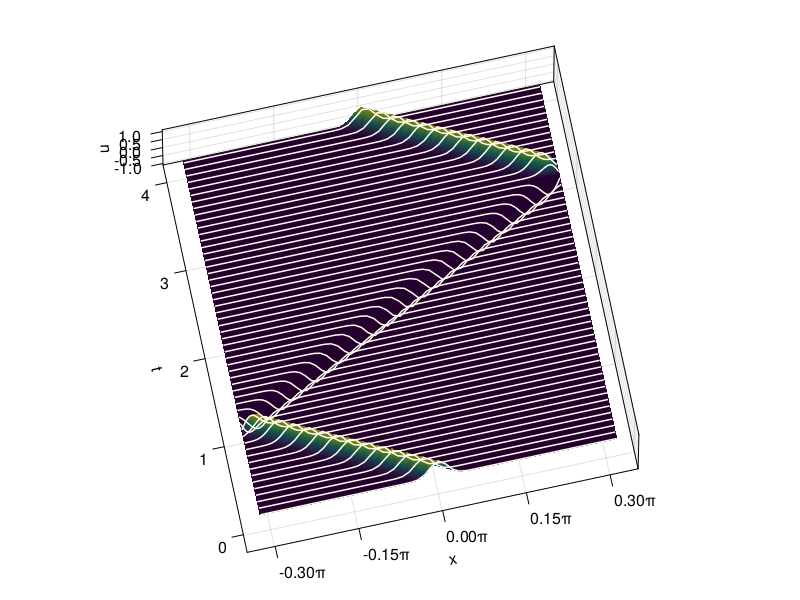
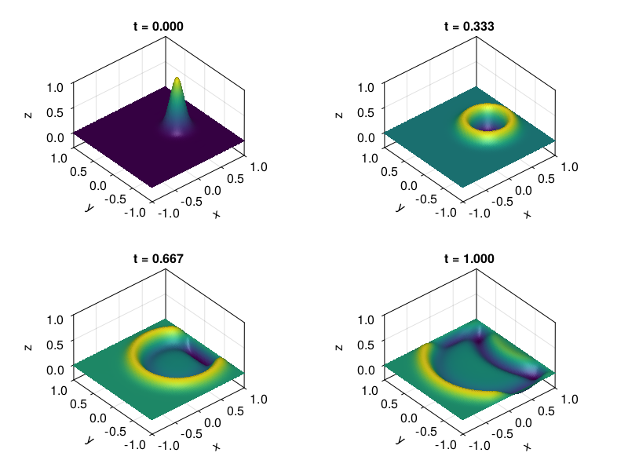

Chebyshev FFT
Contents
8. Chebyshev FFT#
include("smij-functions.jl");
8.1. p18: Chebyshev differentiation via FFT (compare p11)#
u = x -> exp(x) * sin(5x)
uʹ = x -> exp(x) * (sin(5x) + 5 * cos(5x))
xx = (-200:200) / 200
vv = @. u.(xx)
results = []
for (i,N) in enumerate([10, 20])
_, x = cheb(N)
v = u.(x)
error = chebfft(v) - uʹ.(x)
ee = polyinterp(x, error).(xx)
push!(results, (;x,v,error,ee))
end
using CairoMakie
fig = Figure()
for (i,r) in enumerate(results)
N = length(r.x)
Axis(fig[i, 1], title="u(x), N=$N")
scatter!(r.x, r.v)
lines!(xx, vv)
Axis(fig[i, 2], title="error in uʹ(x), N=$N")
scatter!(r.x, r.error)
lines!(xx, r.ee)
end
fig

8.2. p19: 2nd-order wave eq. on Chebyshev grid (compare p6)#
# Time-stepping by leap frog formula:
N = 80
_, x = cheb(N)
Δt = 8 / N^2
v = @. exp(-200 * x^2)
vold = @. exp(-200 * (x - Δt)^2)
tmax = 4
nsteps = ceil(Int, tmax / Δt)
Δt = tmax / nsteps
V = [v fill(NaN, N+1, nsteps)]
t = Δt*(0:nsteps)
for i in 1:nsteps
w = chebfft(chebfft(V[:,i]))
w[1] = w[N+1] = 0
V[:,i+1] = 2V[:,i] - vold + Δt^2 * w
vold = V[:,i]
if norm(V[:,i+1], Inf) > 2.5
nsteps = i
break
end
end
using PyFormattedStrings
# Plot results:
fig = Figure()
Axis3(fig[1, 1],
xticks = MultiplesTicks(5, π, "π"),
xlabel="x", ylabel="t", zlabel="u",
azimuth=4.5, elevation=1.44,
)
gap = max(1,round(Int, 0.075/(t[2]-t[1])) - 1)
surface!(x, t, V, colorrange=(0,1))
[ lines!(x, fill(t[j], length(x)), V[:, j].+.01, color=:ivory) for j in 1:gap:size(V,2) ]
fig

fig = Figure(size=(480,360))
index = Observable(1)
ax = Axis(fig[1, 1],xlabel="x", ylabel="u" )
lines!(x, @lift(V[:,$index]))
record(fig, "_build/html/p19wave.mp4", 1:6:size(V,2)+1) do i
index[] = i
ax.title = f"t = {t[i]:.2f}"
limits!(-1,1,-1,1)
end;
8.3. p20: 2nd-order wave eq. in 2D via FFT (compare p19)#
# Grid and initial data:
N = 32
x = y = cheb(N)[2]
Δt = 6 / N^2
xx = yy = range(-1,1,81)
nsteps = ceil(Int, 1 / Δt)
Δt = 1 / nsteps
vv = [exp(-40 * ((x - 0.4)^2 + y^2)) for x in x, y in y]
vvold = vv
t = Δt*(0:nsteps)
V = zeros(length(xx),length(yy),nsteps+1)
V[:,:,1] = gridinterp(vv,xx,yy)
# Time-stepping by leap frog formula:
uxx = zeros(N+1, N+1)
uyy = zeros(N+1, N+1)
for n in 1:nsteps
ii = 2:N
for i in 2:N
uxx[i,:] .= chebfft(chebfft(vv[i,:]))
uyy[:,i] .= chebfft(chebfft(vv[:,i]))
end
uxx[[1,N+1],:] .= uyy[[1,N+1],:] .= 0
uxx[:,[1,N+1]] .= uyy[:,[1,N+1]] .= 0
vvnew = 2vv - vvold + Δt^2 * (uxx + uyy)
vvold,vv = vv,vvnew
V[:,:,n+1] = gridinterp(vv,xx,yy)
end
inc = div(nsteps,3)
fig = Figure()
ax = [ Axis3(fig[j,i], zticks=[0,0.5,1]) for i in 1:2, j in 1:2 ]
for (i,n) in enumerate(1:inc:nsteps+1)
surface!(ax[i],xx,yy,V[:,:,n])
ax[i].title = f"t = {t[n]:.3f}"
limits!(ax[i],-1,1,-1,1,-0.3,1)
ax[i].elevation = π/5
end
fig

fig = Figure(size=(480,320))
index = Observable(1)
# ax = Axis(fig[1, 1], xlabel="x", ylabel="y", aspect=DataAspect())
ax = Axis3(fig[1, 1], xlabel="x", ylabel="y", azimuth=-π/2, elevation=π/2)
# co = contourf!(ax,xx, yy, @lift(V[:,:,$index]),
# levels=range(-0.3,1,24),
# colormap=:bluesreds )
co = surface!(xx, yy, @lift(V[:,:,$index]),
colormap=:bluesreds, colorrange=[-0.8,0.8] )
record(fig, "_build/html/p20wave.mp4", 1:size(V,3)) do i
index[] = i
ax.title = f"t = {t[i]:.2f}"
end;